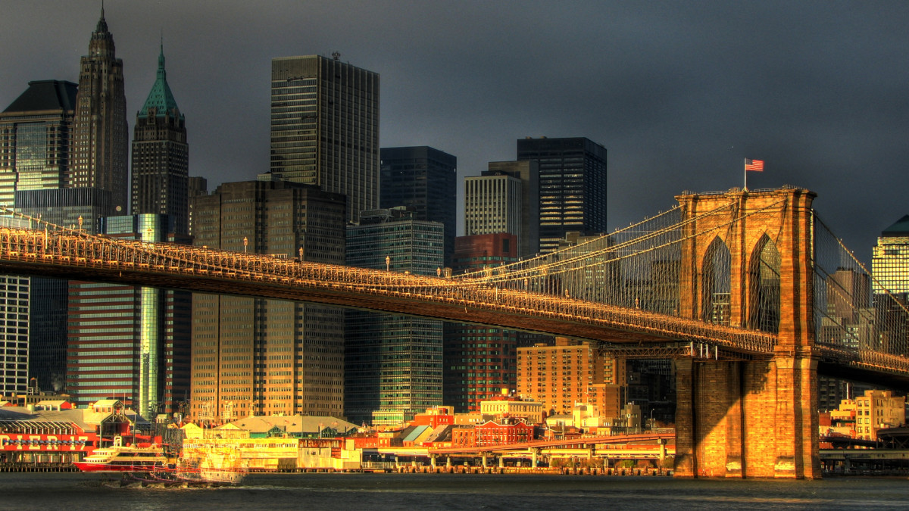

The Brooklyn Bridge is a hybrid cable-stayed/suspension bridge in New York City, spanning the East River between the boroughs of Manhattan and Brooklyn. Opened on May 24, 1883, the Brooklyn Bridge was the first fixed crossing of the East River. It was also the longest suspension bridge in the world at the time of its opening, with a main span of 1,595.5 feet (486.3 m) and a deck 127 ft (38.7 m) above mean high water. The span was originally called the New York and Brooklyn Bridge or the East River Bridge but was officially renamed the Brooklyn Bridge in 1915.
Proposals for a bridge connecting Manhattan and Brooklyn were first made in the early 19th century, which eventually led to the construction of the current span, designed by John A. Roebling. The project's chief engineer, his son Washington Roebling, contributed further design work, assisted by the latter's wife, Emily Warren Roebling. Construction started in 1870.